7.3 I/O方式
输入/输出系统实现主机与 I/O 设备之间的数据传送，可采用不同的控制方式。各种方式在硬件代价、系统性能以及应用场景等方面各有侧重，常用的 I/O 方式包括程序查询、程序中断和 DMA 等，其中前两种方式高度依赖 CPU 执行程序指令来完成控制。本节是全章的重头戏：选择题反复考中断响应条件、中断屏蔽字、DMA 传送方式的细节；综合题则爱考各种方式的效率计算——教材三道例题（查询时间开销、中断可行性、DMA 占用率）务必练到能独立复算。
7.3.1程序查询方式
在程序查询方式中，数据交换的控制完全由 CPU 通过执行程序实现。接口电路通常包含一个数据缓冲寄存器（数据端口）和一个设备状态寄存器（状态端口）。主机进行 I/O 操作时，首先读取设备状态，再据此决定是立即传送数据还是继续等待。
程序查询方式的工作流程如下（见图 7.2）：
- CPU 执行初始化程序，预置传送参数（如起始地址、数据量等）；
- 向 I/O 接口发送命令字，启动外设；
- 循环读取外设状态寄存器；
- 若设备未就绪，则继续查询；若就绪，则执行一次数据传送；
- 修改地址和计数器参数；
- 判断传送是否完成，若未完成则返回第 3 步，直至计数器归零等。
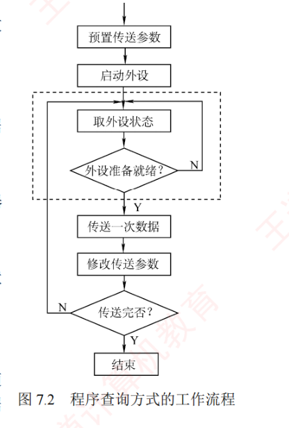
根据查询策略的不同，程序查询方式可分为两类：
1. 独占查询
一旦启动外设，CPU 便连续不断地查询其状态位，直至传输完成。在此期间，CPU 无法执行其他任务，处于「等待」状态，导致 CPU 与外设完全串行工作。
2. 定时查询
CPU 以固定时间间隔周期性地查询外设状态。每次查询时，若设备已就绪，则传送一个数据单元，随后返回用户程序继续执行；查询间隔需根据数据传输速率合理设置，以避免数据丢失。
【例 7.1】假设主机主频为 500MHz，CPI 为 4，某外设的数据传输速率为 \(2\,\text{MB/s}\)，其 I/O 接口配备一个 32 位数据缓冲寄存器。采用定时查询方式，每次查询操作执行 10 条指令。问：CPU 最少间隔多长时间查询一次，才能避免数据丢失？此时 CPU 用于该外设 I/O 的时间占整机时间的百分比是多少？
解：由于端口缓冲区容量有限，必须在外设填满缓冲区之前完成读取，否则新数据将覆盖尚未读取的旧数据，造成丢失。外设填满（4 字节）缓冲区所需时间为
$$4\,\text{B} \div 2\,\text{MB/s} = 2\,\mu\text{s}$$因此，CPU 最多每隔 \(2\,\mu\text{s}\) 就需查询一次，即每秒至少查询 \(1\,\text{s} \div 2\,\mu\text{s} = 5 \times 10^{5}\) 次。每次查询执行 10 条指令，每条指令平均消耗 4 个时钟周期，故每秒用于 I/O 的时钟周期数为
$$5 \times 10^{5} \times 10 \times 4 = 2 \times 10^{7}$$CPU 主频为 500MHz（每秒 \(5 \times 10^{8}\) 个时钟周期），因此 I/O 时间占比为
$$\frac{2 \times 10^{7}}{5 \times 10^{8}} = 4\%$$程序查询方式的优点是设计简单、硬件开销小；缺点是需花费大量时间进行查询与等待，且在同一时间段内只能与一台外设通信，导致 CPU 与外设串行工作，效率很低。
7.3.2程序中断方式
1. 程序中断的基本概念
程序中断是指在计算机执行程序的过程中，当出现某些急需处理的事件或异常情况时，CPU 暂停当前程序的执行，转去处理这些事件或异常；处理完毕后，再返回到原程序的断点处继续执行。中断技术常被用于实现主机与 I/O 设备之间的异步通信。
随着计算机系统的发展，中断技术被赋予了多种重要功能，主要包括：
- 实现 CPU 与 I/O 设备的并行工作；
- 处理硬件故障和软件异常；
- 支持人机交互（如键盘输入、鼠标点击）；
- 支持多道程序与分时操作系统的任务切换；
- 支持实时处理设备的快速响应需求；
- 实现用户程序向操作系统的切换（如通过中断或系统调用指令）；
- 在多处理机系统中协调处理器间的通信与任务调度。
中断的基本工作思想：当前进程发起 I/O 请求时，会启动相应外设，并主动进入阻塞状态；CPU 随即转而执行就绪队列中的另一进程，实现外设与 CPU 的并行工作。外设完成数据准备后，主动向 CPU 发出中断请求；CPU 响应后，暂停当前程序的执行，保存现场，转入中断服务程序，完成主机与外设之间的数据传送。数据传送结束后，CPU 恢复被中断进程的现场，并返回断点处继续执行。此后，外设与 CPU 再次并行工作，如图 7.3 所示。
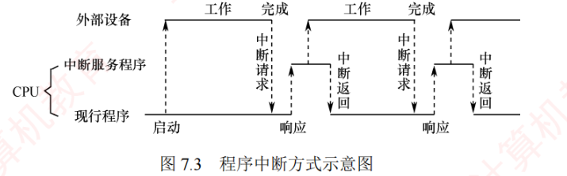
【例 7.2】假设主机主频为 500MHz，CPI 为 4，某外设的数据传输速率为 \(40\,\text{MB/s}\)，其 I/O 接口配备一个 32 位数据缓冲寄存器。在中断 I/O 方式下，若每次中断响应与中断处理共需至少 400 个时钟周期，则该外设能否采用中断 I/O 方式？为什么？
解：中断响应与中断处理所需时间为
$$400 \times \frac{1}{500\,\text{MHz}} = 0.8\,\mu\text{s}$$外设填满（4B）缓冲区所需时间为
$$4\,\text{B} \div 40\,\text{MB/s} = 0.1\,\mu\text{s}$$由于准备数据的时间（\(0.1\,\mu\text{s}\)）远小于中断处理时间（\(0.8\,\mu\text{s}\)），若采用「每满 32 位中断一次」的串行中断方式，则 CPU 尚未处理完上一次中断，新数据就已到达，导致缓冲区被覆盖而丢失数据。因此，该高速外设不适合直接使用串行中断方式。
2. 程序中断的工作流程
（1）中断请求
中断源是指能够向 CPU 发出中断请求的设备或事件。一台计算机允许多个中断源同时存在，且各中断源发出请求的时刻具有随机性。为了记录并区分不同的中断请求，中断系统为每个中断源设置一个中断请求标志触发器：当其置为「1」时，表示该中断源有请求。这些触发器可组成中断请求标记寄存器，该寄存器可集中于 CPU 内部，也可分散在各个中断源中。
通过 INTR 信号线发出的是可屏蔽中断，通过 NMI 信号线发出的是不可屏蔽中断。可屏蔽中断的优先级较低，在中断允许（开中断）情况下才可被响应；不可屏蔽中断用于处理紧急且关键的事件（如电源掉电、总线错误等），其优先级较高，且不受中断允许标志的影响。
（2）中断判优
中断响应优先级是指 CPU 响应多个同时发生的中断请求的先后顺序。由于中断请求具有随机性，当多个中断源同时提出请求时，需通过中断判优逻辑确定优先响应哪个中断源的请求。中断判优可通过硬件排队器（或中断控制器）实现，也可由程序查询实现。
一般来说：① 不可屏蔽中断 > 可屏蔽中断；② 在 I/O 传送类中断请求中，高速设备 > 低速设备，输入设备 > 输出设备，实时设备 > 普通设备。
（3）CPU 响应中断的条件
CPU 仅在满足特定条件时才会响应中断请求，并经过一些特定的操作，转去执行中断服务程序。CPU 响应中断必须满足以下三个条件：
- 存在有效的中断请求；
- CPU 处于开中断状态（中断允许标志为 1；异常和不可屏蔽中断不受此限制）；
- 当前指令已执行完毕（异常不受此限制），且无更高优先级任务待处理。
（4）中断响应过程与中断隐指令
CPU 响应中断后，由硬件自动完成一系列操作，称为中断隐指令，随后转入中断服务程序。中断隐指令并非指令系统中的真实指令，而是对硬件自动完成的操作的统称，主要包括：
- 关中断：CPU 响应中断后，首先关中断（清中断允许标志），禁止响应任何新中断（包括更高优先级），以防止在保存断点和现场时被新中断打断；否则，现场信息可能不完整，导致中断返回后无法正确恢复原程序的执行；
- 保存断点：为保证中断返回后能正确恢复原程序执行，需将程序计数器（PC）和程序状态字（PSW）等关键信息保存至栈或特定寄存器中。中断与异常的断点不同：中断发生于指令执行完成后，断点为下一条指令地址；故障类异常（如缺页、除零）因指令未完成，处理后需重新执行当前指令，断点为当前指令地址；陷阱类异常（如系统调用）在指令成功执行后被触发，断点为下一条指令地址；
- 引出中断服务程序：通过识别中断源，将对应中断服务程序的入口地址送入程序计数器 PC。识别方法主要有硬件向量法和软件查询法。
（5）中断向量
中断识别分为向量中断和非向量中断两类，非向量中断采用软件查询法。向量中断中，每个中断源被分配一个唯一的中断类型号，该类型号对应一个中断服务程序的入口地址，该入口地址称为中断向量。系统将所有中断向量集中存放在内存的特定区域，该区域称为中断向量表。
CPU 响应中断后，首先在中断响应阶段从数据总线获取该中断源的中断类型号，然后据此计算出对应中断向量在中断向量表中的地址；接着从中断向量表中读取该中断向量，并送入程序计数器 PC，从而转入相应的中断服务程序。这种基于中断向量表实现转移的方法称为中断向量法，采用该法的中断即为向量中断。
注意：中断请求和响应信号通过 I/O 总线的控制线传输，而中断类型号由中断控制器经数据总线提供给 CPU，用于定位中断向量表中的相应表项（呼应 7.2.2 中「数据线上传中断类型号」）。
（6）中断处理过程
不同计算机的中断处理过程各具特色，图 7.4 所示为一个支持中断嵌套的典型处理流程：
- 关中断：防止在保存关键信息过程中被新中断打断；
- 保存断点：由硬件自动将断点信息保存至栈或专用寄存器；
- 中断服务程序寻址：通过中断类型号获取服务程序入口地址，并送入 PC；
- 保存现场和中断屏蔽字：通过软件指令将现场信息和中断屏蔽字压入栈中，以便后续恢复。现场信息是 CPU 中可能被中断服务程序修改且需恢复的寄存器内容；
- 开中断：由开中断指令实现，允许更高优先级的中断请求被响应，从而实现中断嵌套；
- 执行中断服务程序：完成本次中断要求的具体服务；
- 关中断：由关中断指令实现，确保在恢复现场和中断屏蔽字的过程中不被中断；
- 恢复现场和中断屏蔽字：从栈中恢复寄存器内容及中断屏蔽状态；
- 开中断、中断返回：中断服务程序的最后一条指令通常为中断返回指令，用于恢复断点现场并返回原程序继续执行。
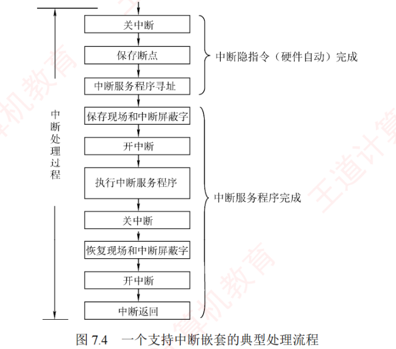
其中，①～③ 由中断隐指令（硬件自动）完成，④～⑨ 由中断服务程序（软件）完成。对于单重中断（不支持嵌套），上述流程中省略第 ⑤ 步（开中断）和第 ⑦ 步（关中断）即可。
3. 多重中断和中断屏蔽技术
在 CPU 执行中断服务程序的过程中，若出现新的更高优先级中断请求而 CPU 不予响应，则称为单重中断（图 7.5(a)）；若 CPU 暂停当前中断服务程序、转去处理新中断，则称为多重中断（也称中断嵌套，图 7.5(b)）。
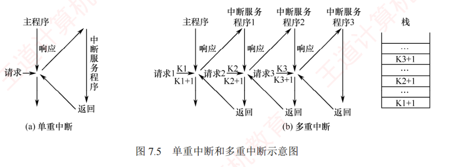
以图 7.5(b) 为例：CPU 执行主程序时收到中断请求 1，由于主程序未屏蔽任何中断，CPU 响应该请求，将主程序断点保存至栈中，并转入中断服务程序 1。在执行服务程序 1 期间，若发生优先级更高的中断请求 2，CPU 会暂停服务程序 1，将其断点保存至栈中，并转入中断服务程序 2。类似地，更高优先级的中断请求 3 可打断服务程序 2。请求 3 处理完毕后，CPU 从栈顶恢复断点，返回服务程序 2 的断点（\(K_3+1\)）处继续执行，以此类推，直至所有中断处理完毕，最终返回主程序的断点（\(K_1+1\)）处继续执行。
中断处理优先级是指多重中断的实际处理顺序，可通过中断屏蔽字技术动态调整。若不使用屏蔽技术，则处理优先级与响应优先级（中断请求被 CPU 识别的先后顺序）一致。现代计算机普遍采用中断屏蔽技术，通过设置中断屏蔽字寄存器实现灵活的优先级控制。
图 7.6 所示为一个简单的可编程中断控制器：来自 I/O 总线的外设中断请求信号（IRi）首先被记录在中断请求寄存器中；中断屏蔽字寄存器的每一位对应一个中断源，置 1 时屏蔽对应的中断请求，置 0 时允许其通过。每个中断请求信号与其对应屏蔽位的取反值进行逻辑「与」——仅当屏蔽位为 0 时，该中断请求才被允许参与仲裁。因此，被屏蔽的中断无法进入排队电路，而未被屏蔽的中断则按固定的响应优先级次序处理。
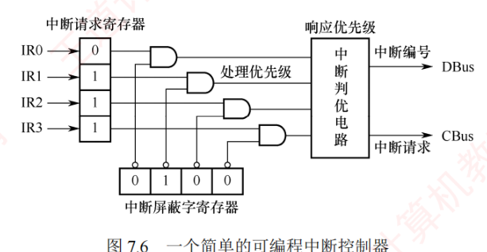
需要注意的是，中断屏蔽字通常在进入中断服务程序时由软件加载，用于控制后续中断的屏蔽行为。因此，中断屏蔽仅在 CPU 执行中断服务程序期间生效；而在主程序运行阶段，中断响应由主程序所设置的屏蔽状态决定（通常为不屏蔽）。此外，即使在服务程序执行期间有多个未屏蔽中断同时到达，其处理顺序仍由中断判优电路的响应优先级决定。关于中断屏蔽字的设置及多重中断程序执行的轨迹，通过例 7.3 说明。
【例 7.3】假设某机有 4 个中断源 A、B、C、D，其硬件响应优先级为 \(A > B > C > D\)。现要求通过中断屏蔽技术，将实际中断处理优先级调整为 \(A > D > C > B\)。
1）写出每个中断源对应的中断屏蔽字；
2）若 CPU 在执行用户程序时，A、C、D 同时发出中断请求，随后在执行 C 的中断服务程序期间，B 又发出中断请求，请给出 CPU 执行程序的执行轨迹。
解：
1）中断处理优先级调整为 \(A > D > C > B\) 后：A 的处理优先级最高，需要屏蔽所有中断（包括自身），屏蔽字为 1111；D 次之，只允许被 A 中断，屏蔽 B、C 和自身，屏蔽字是 0111；C 第三，允许被 A 和 D 中断，屏蔽 B 和自身，屏蔽字为 0110；B 最低，允许被 A、D、C 中断，仅屏蔽自身，屏蔽字为 0100。结果如表 7.1 所示。
| 中断源 | A | B | C | D |
|---|---|---|---|---|
| A | 1 | 1 | 1 | 1 |
| B | 0 | 1 | 0 | 0 |
| C | 0 | 1 | 1 | 0 |
| D | 0 | 1 | 1 | 1 |
2）CPU 执行用户程序时，A、C 和 D 同时发出中断请求。根据响应优先级，先响应 A。进入 A 的服务程序前，系统保存现场，加载 A 的屏蔽字 1111，并开中断。由于所有中断均被屏蔽，A 的服务程序执行至完成，返回用户程序。此后用户程序继续运行，C 和 D 尚未处理，根据响应优先级，先响应 C。但在执行 C 的服务程序前，系统加载其屏蔽字 0110，即允许 D 打断 C。于是 CPU 响应 D 的请求；D 的处理过程中未出现更高优先级的中断请求，D 顺利完成后返回中断中的 C 继续执行。在 C 的处理过程中，B 发出中断请求，但由于 C 的屏蔽字为 0110，B 被屏蔽，该请求不予响应。C 处理完后返回用户程序。最后，CPU 响应 B，B 处理完成后，再返回用户程序。整个执行轨迹如图 7.7 所示。
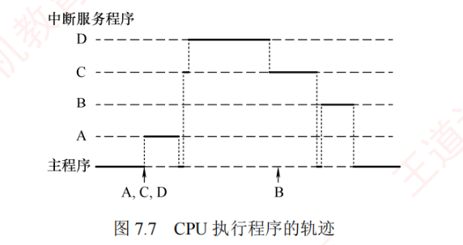
从宏观上看，程序中断方式克服了程序查询方式中 CPU「原地等待」的现象，显著提高了 CPU 利用率。但从微观角度分析，CPU 在处理中断时仍需暂停原程序的运行，尤其当高速设备频繁、成批地与主机交换数据时，会不断打断 CPU 现行程序以执行中断服务程序，造成较大开销——这正是引出 DMA 方式的动机。
7.3.3DMA 方式
DMA 方式是一种完全由硬件控制的数据传输方法。它保留了程序中断方式的优点——数据准备阶段 CPU 与外设可并行工作；同时在外设与内存之间建立了一条直接的数据通路，使得信息传送无须经过 CPU，从而显著降低 CPU 在数据传输过程中的负担，并避免了保存与恢复 CPU 现场等复杂操作。正因如此，该方法被称为直接存储器存取（DMA）。
DMA 特别适用于磁盘、显卡、声卡、网卡等高速设备的大批量数据传输，但其硬件实现开销较大。在 DMA 方式中，中断的作用仅限于处理故障和正常传输完成的告知。
1. DMA 方式的特点
DMA 控制器在主存与外设之间建立了一条直接的数据通路。由于数据传输不经过 CPU，因此无须中断现行程序，从而实现 I/O 操作与 CPU 计算的并行执行。DMA 方式的主要特性包括：
- 打破主存与 CPU 的固定关系，主存既可被 CPU 访问，又可被外设直接访问；
- 在数据传送过程中，主存地址的生成、传送字节数的计数均由硬件电路自动完成；
- 主存中需设置专用缓冲区，以支持高效的数据交换；
- 支持高速数据传输，且 CPU 与外设可并行工作，显著提升系统效率；
- 传输开始前需由软件进行预处理，结束后则通过中断机制完成后处理。
2. DMA 控制器的组成
在 DMA 方式中，对数据传送过程进行控制的硬件称为 DMA 控制器（DMA 接口）。当 I/O 设备需要进行数据传送时，通过 DMA 控制器向 CPU 提出 DMA 请求，CPU 响应后即让出系统总线，由 DMA 控制器接管总线并执行数据传送。其主要功能如下：
- 接收外设发出的 DMA 请求，并向 CPU 发出总线请求信号；
- 在 CPU 发出总线响应信号后，接管系统总线控制权，进入 DMA 操作周期；
- 确定数据传送的主存起始地址及长度，并自动更新主存地址计数器和传送长度计数器；
- 指定数据在主存与外设间的传送方向，发出读/写等控制信号，完成数据传送；
- 在 DMA 操作结束后，向 CPU 报告传送完成。
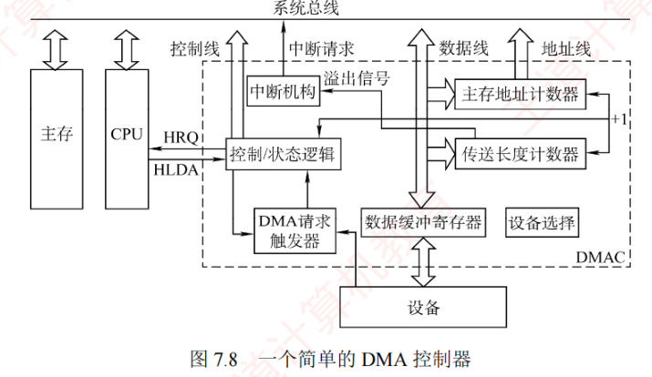
图 7.8 中各部件的作用如下：
- 主存地址计数器（即主存地址寄存器 MAR）：存放传送数据的主存起始地址；预置整批数据的起始地址后，每传送一个字其内容自动加 1，直至该批数据传送完毕；
- 传送长度计数器（字计数器 WC）：记录待传送数据的总长度。传送前存入整批数据的总字数；每传送一个字计数值减 1，当计数器为 0 时表示传送结束；
- 数据缓冲寄存器（即 MDR/BR）：暂存每次传送的数据。通常，DMA 控制器与主存之间以字为单位传送，而与外设之间可能以字节或位为单位；
- DMA 请求触发器：当 I/O 设备准备好数据时，发出 DMA 请求信号使其置位；
- 控制/状态逻辑：用于设定传送方向、更新传送参数，并协调 DMA 请求与 CPU 响应信号；
- 中断机构：当一批数据传送完毕后，触发中断并向 CPU 发出中断请求（用于后处理）。
补充：部分教材还列出设备地址寄存器（DAR）——存放 I/O 设备的编址信息（如磁盘的盘号、柱面号、扇区号）和命令/状态寄存器（CR）——存放 CPU 预置的命令字与设备状态，读题时按名称对号入座即可。在 DMA 传送过程中，DMA 控制器接管系统总线；传送结束后，将总线控制权交还给 CPU，由 CPU 继续执行后续操作。因此，DMA 控制器必须具备控制系统总线的能力。
3. DMA 的传送方式
主存与 I/O 设备之间交换信息时不经过 CPU。然而，当 I/O 设备和 CPU 同时访问主存时可能发生冲突，为有效利用主存，DMA 与 CPU 通常采用以下三种方式共享主存。
（1）停止 CPU 访存
当 I/O 设备发出 DMA 请求时，DMA 控制器向 CPU 发送停止信号，使 CPU 放弃总线控制权并暂停访存，直至 DMA 完成整批数据的传送（见图 7.9）。数据传送结束后，DMA 控制器通知 CPU 恢复访存，并交还总线控制权。
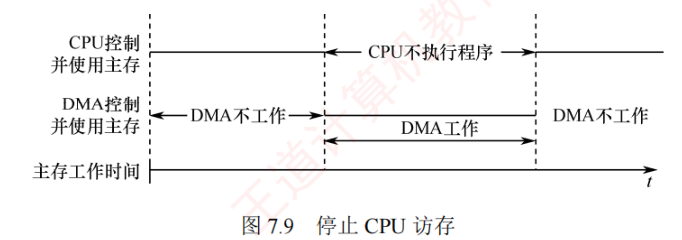
优点：控制逻辑简单，适用于数据传输速率很高的 I/O 设备进行成组数据传送。缺点：DMA 访存期间，CPU 基本处于闲置状态，资源利用率较低。
（2）周期挪用（周期窃取）
对于高速 I/O 设备，若不及时访存可能导致数据丢失，因此其访存请求应具有较高的优先级。周期挪用允许 I/O 设备挪用一个存储周期传送一个数据后立即释放总线（见图 7.10）。当 I/O 设备发出 DMA 请求时，可能出现以下三种情况：
- CPU 当前不访存，I/O 请求无冲突，可直接使用总线；
- CPU 正在访存，则需等待当前存储周期结束，再释放总线控制权；
- I/O 与 CPU 同时请求访存，发生冲突，此时 CPU 暂时放弃总线控制权。
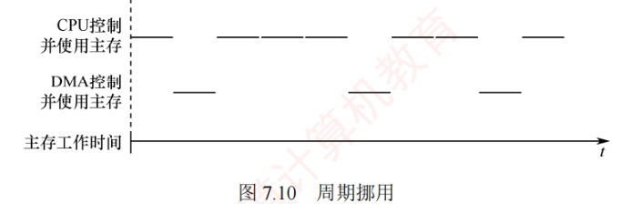
优点：既满足了 I/O 数据传送需求，又较好地发挥了 CPU 与主存的效率。缺点：每次挪用均需申请并释放总线控制权，带来一定开销。
（3）DMA 与 CPU 交替访存
将 CPU 工作周期划分为两个子周期，一个供 CPU 访存，一个供 DMA 访存。这样，在每个 CPU 周期内，两者可轮流访存（见图 7.11）。该方式适用于 CPU 工作周期长于主存存取周期的场景。例如，若 CPU 工作周期为 \(1.2\,\mu\text{s}\)，主存存取周期小于 \(0.6\,\mu\text{s}\)，则可将其分为 \(C_1\) 和 \(C_2\) 两个子周期，其中 \(C_1\) 专供 DMA 访存，\(C_2\) 专供 CPU 访存。总线控制权通过 \(C_1\)、\(C_2\) 分时固定分配，无须动态申请和释放。
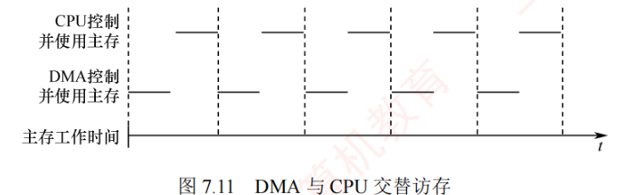
优点：无须总线控制权的申请与释放过程，数据传送速率高。缺点：硬件控制逻辑较为复杂。
| 方式 | 做法 | 优点 | 缺点 |
|---|---|---|---|
| 停止 CPU 访存 | DMA 期间 CPU 暂停访存、让出总线 | 控制逻辑简单 | CPU 闲置，利用率低 |
| 周期挪用 | 按存储周期申请，挪用一个周期传一个数据 | 兼顾 CPU 与主存效率 | 反复申请/释放总线，有开销 |
| DMA 与 CPU 交替访存 | CPU 周期分为 \(C_1\)（DMA）、\(C_2\)（CPU）子周期，分时固定分配 | 无须申请释放，传送速率高 | 硬件控制逻辑复杂 |
【例 7.4】假定计算机的主频为 500MHz，CPI 为 4，某外设的数据率为 \(40\,\text{MB/s}\)，I/O 接口中的数据端口为 32 位。采用 DMA 方式，每次 DMA 传送块大小为 1000B，且 DMA 预处理和后处理的总时钟周期数为 500，则 CPU 用于该外设 I/O 的时间占 CPU 总时间的百分比是多少？
解：DMA 每秒传送次数为
$$40\,\text{MB/s} \div 1000\,\text{B} = 4 \times 10^{4}\ \text{次}$$在 DMA 方式中，只有预处理和后处理需要 CPU 处理，数据传送全过程由 DMA 控制器完成。CPU 用于该外设 I/O 的总时钟周期数为
$$4 \times 10^{4} \times 500 = 2 \times 10^{7}$$占 CPU 总时间的比例为
$$\frac{2 \times 10^{7}}{5 \times 10^{8}} = 4\%$$【例 7.4 与例 7.1 对比】同样的 \(40\,\text{MB/s}\) 量级设备，若按例 7.2 的方式用串行中断处理，每次中断处理 400 周期而数据每 \(0.1\,\mu\text{s}\) 就绪一次，根本来不及；而 DMA 方式下 CPU 只为每 1000B 的块花 500 个周期做预处理和后处理，占比仅 4%——高速设备必须交给 DMA。
4. DMA 的传送过程
图 7.12 所示为 DMA 的数据传送流程，分为预处理、数据传送和后处理三个阶段。
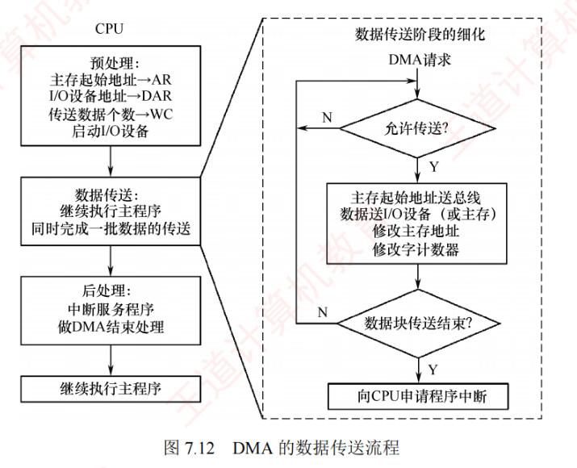
（1）预处理
由 CPU 完成必要的初始化工作，包括设置 DMA 控制器中的主存起始地址、传送方向、传送数据个数，并启动 I/O 设备。随后，CPU 继续执行原程序。当 I/O 设备准备好待发送（输入）或接收（输出）的数据时，会向 DMA 控制器发出 DMA 请求；DMA 控制器随即向 CPU 发出总线请求，申请总线控制权。
（2）数据传送
DMA 以数据块为单位进行传送。一旦获得总线控制权，DMA 控制器便通过硬件循环自动完成数据的输入或输出操作，整个过程无须 CPU 干预。
（3）后处理
数据块传送结束后，DMA 控制器向 CPU 发出中断请求，CPU 响应后执行中断服务程序，进行后处理工作，如校验数据完整性，若出错则转入诊断程序等。
在 DMA 方式下，整个数据块的传送过程均由硬件完成，CPU 仅在预处理阶段进行初始化，在后处理阶段响应中断，因此用于 I/O 的开销极小。
5. DMA 与中断方式的对比
| 对比项 | 程序中断方式 | DMA 方式 |
|---|---|---|
| 数据通路 | I/O 设备与 CPU 之间，数据必经 CPU | 主存与外设之间建立直接数据通路，不经过 CPU |
| 传送由谁完成 | CPU 执行中断服务程序（软件） | DMA 控制器（硬件） |
| 传送单位 | 按字节（字）逐个传送 | 按数据块成批传送 |
| CPU 被打扰频率 | 每传一个数据都要中断一次 | 仅预处理、后处理各打扰一次 |
| 中断的作用 | 数据传送本身依靠中断实现 | 仅用于故障处理和传输完成的告知（后处理） |
| 现场保护 | 需保存断点并保存/恢复现场 | 不暂停主程序，无须保存/恢复现场 |
| 响应时机 | 每条指令执行结束后采样响应 | 以总线（存储）周期为界申请/让权，无须等指令结束 |
| 硬件开销 | 较小 | 较大（需 DMA 控制器） |
| 适用场景 | 中低速设备 | 磁盘、显卡、声卡、网卡等高速设备的大批量传输 |